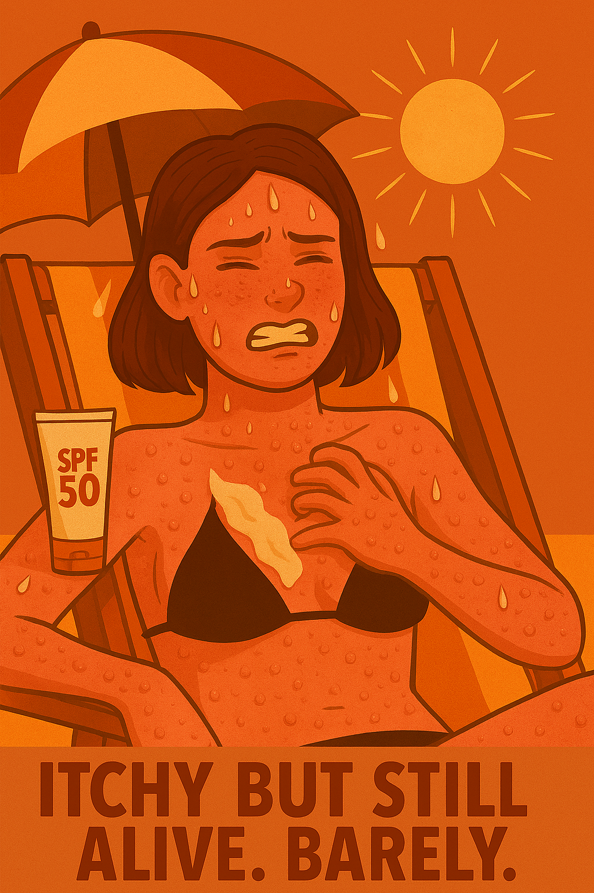

Find din kur til at undgå soleksem
Du kender det. Du har smurt dig ind i solcreme, du har siddet under parasollen, du har endda googlet “kan man få soleksem af skygge?” – og alligevel ligner din hud en blanding af jordbærgrød og sandpapir. Kløen starter som en lille prik, og før du ved af det, står du og gnubber dig mod en lygtepæl som en kat i brunst. Men frygt ej! Vi har samlet de bedste (og mest tålelige) tricks til at undgå soleksem – uden at du skal pakke dig ind i alufolie eller leve i en mørk kælder hele sommeren. Fra magiske cremer og anti-kløe hacks til “hvordan du ikke ligner en stegt reje på stranden”-guiden. 💡 Læs med og få: Den rigtige solcreme (spoiler: SPF 10 er ikke nok, Karen) Tips til tøj, der beskytter uden at få dig til at ligne en teltsælger Og den vigtigste regel af dem alle: Sved er ikke solbeskyttelse Din hud vil takke dig. Din parasol vil få en pause. Og du slipper for at klø dig som en gal i Netto.
Se mere